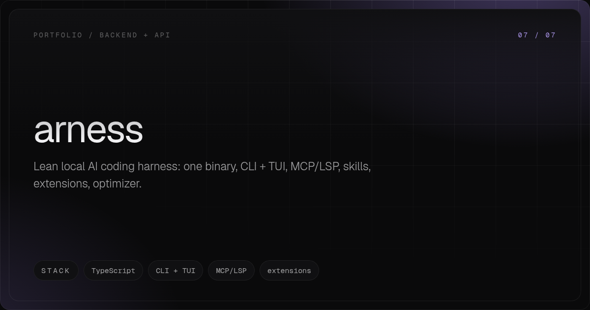

[ TypeScript ] 7 of 7
arness
Lean local AI coding harness: one binary, CLI + TUI, MCP/LSP, skills, extensions, optimizer.
curl -fsSL https://raw.githubusercontent.com/mariobgsp/arness/master/install.sh | sh
[ 01 ] WHAT IT IS
In plain words
arness is a coding agent that runs entirely on your machine as one binary: an interactive TUI and a print mode over the same turn loop, with tools (bash, filesystem, search), skills, an extension API, MCP and LSP capabilities, subagents, memory and a token optimizer.
It is built to stay small. TypeScript is compiled by bun into a single executable, Node 26 is a build-time requirement only, and the sole devDependency is the compiler used for tsc --noEmit.
State is plain files under your config and state directories - arness.json for configuration, one JSONL event log per session, and optimizer.jsonl with one savings row per provider call - so a session can be forked, switched, inspected or deleted with tools you already have.
It is for people who want a local harness they can read and extend: the spec of record lives in the repository (CONTEXT.md, PLAN.md), the suite runs on node --test against committed SSE captures, and every capability states its boundary - including the bash tool, which is not a sandbox.
[ 02 ] PURPOSE
Why it exists
Most harnesses are a hosted runtime with a CLI attached. arness is the opposite: one local binary you own, where the turn loop, the tools, the provider adapter and the optimizer all live in a single TypeScript source tree, and nothing leaves the machine except the provider call you configured.
The optimizer exists because agent sessions are mostly repetition. Prefix ordering, compression, clamping, breakpoints and pruning are applied before the request, and every saving is appended to a ledger - so the number can be checked instead of claimed.
[ 03 ] TECH STACK
What it is built on
- TypeScript on Node 26
- Erasable syntax only, checked with tsc --noEmit; TypeScript is the only devDependency, so the source carries no build-time framework.
- bun build --compile
- One self-contained executable per platform; install.sh and install.ps1 drop it under the user data directory and link a shim onto PATH.
- node --test
- The suite runs on the runtime's own test runner with no framework; provider streams are parsed against committed SSE captures, so tests never touch the network.
- MCP + LSP
- src/capabilities/ attaches MCP servers and a language server to the session, so context comes from real tools rather than from the loop guessing.
- JSONL event log + savings ledger
- One event log per session under the state directory makes /fork and /switch cheap; optimizer.jsonl keeps one savings row per provider call.
[ 04 ] STRUCTURE
Where the code lives
- src/main.ts - entrypoint and mode selection: interactive TUI, or -p for one turn, print and exit.
- src/core/ - config, events and session, the turn loop, system prompt and skills, token accounting and rendering (config.ts, events.ts, session.ts, loop.ts, system-prompt.ts, skills.ts, tokens.ts, render.ts, commands.ts, context.ts).
- src/tools/ - the bash, filesystem and search tools plus the registry; src/ext/ - the extension loader, hooks, host and types.
- src/capabilities/ - MCP, LSP, subagents, memory, review, search and todo guards.
- src/optimizer/ - prefix order, compression, clamp, breakpoints and prune, with report.ts and rtk.ts; src/providers/openai.ts is the provider adapter.
- src/tui/ - input, theme and the terminal UI; test/ - node --test suites with committed SSE fixtures; scripts/check-names.mjs guards against foreign harness references.
[ 05 ] ARCHITECTURE
How it works
- One loop, two front ends: the TUI and print mode drive the same turn loop, so a scripted run and an interactive session take an identical path through tools, capability hooks and the optimizer.
- The optimizer runs before the request: it rewrites the outgoing payload and appends a savings row per provider call, which is what makes the ledger auditable.
- Sessions are files: every event is appended to sessions/<cwd-slug>/<iso>_<id>.jsonl, so forking, switching and inspecting a session need no database.
- Extensions hook the loop: src/ext/ exposes lifecycle hooks, and a tool_call hook can veto a call before it runs, so policy can be added without editing core.
- Capabilities are attached, not baked in: MCP servers, a language server, subagents and memory are registered onto the session, which keeps the loop small and the surface testable.
- Boundaries are stated rather than implied: the bash tool is unrestricted code execution with no isolation layer, and the extension hook is the intended place to add policy.

[ 06 ] INSTALL
Set it up
curl -fsSL https://raw.githubusercontent.com/mariobgsp/arness/master/install.sh | sh
# Windows (PowerShell): irm https://raw.githubusercontent.com/mariobgsp/arness/master/install.ps1 | iex
arness
arness -p "explain src/main.ts"
arness -p "..." --dry-run
[ 07 ] QUICKSTART
See it work
- Install, then run arness with no arguments for an interactive TUI session; arness -p "..." runs one turn, prints the answer to stdout and exits.
- Configuration is optional: every key in ~/.config/arness/arness.json has a default, and ARNESS_MODEL, ARNESS_BASE_URL and ARNESS_API_KEY override it for one shell.
- Ask for the optimizer report before spending anything: --dry-run prints what would be sent and sends no request.
- Read the state directory when a session surprises you: one JSONL event log per session plus optimizer.jsonl with one savings row per provider call.
- Check the tree before trusting it: node --run check (no foreign harness references), node --run typecheck, node --run test, or node --run verify for all three in order.
[ 08 ] TRADEOFFS
What it does not do
- The bash tool runs bash -lc on Linux/macOS and cmd /c on Windows: unrestricted code execution. This is a single-user local CLI, not a sandbox - there is no isolation layer and none is promised; the tool_call extension hook exists so an extension can veto a call before it runs.
- Development needs Node 26 and bun for the compile step. Released binaries are self-contained, but the package version is still 0.0.0 and no benchmark numbers are published.
- The repository carries plan documents (MCP-PLAN.md, LSP-PLAN.md, TUI-PLAN.md, EXT-PLAN.md); what is actually built is listed in the README notes, and not every planned item has shipped.
- There is no cloud sync, no team surface and no remote execution: state is local files, so a session lives on one machine.
[ 09 ] SOURCE
Read the code
The full implementation, tests and documentation live in the repository.